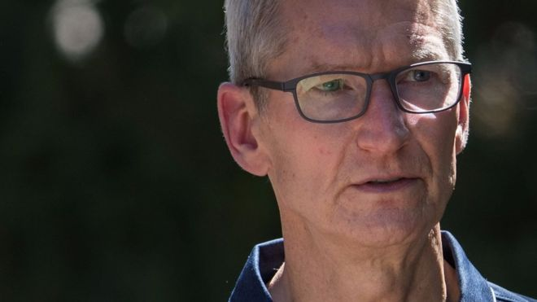

苹果CEO辩解为何向中国网络审查低头
文章来源:http://www.bbc.com/zhongwen/simp/chinese-news-40799126
发稿时间:2017//8/2

库克称苹果不愿下架那些VPN应用。 (GETTY IMAGES)
苹果CEO蒂姆·库克（Tim Cook）为遵守中国法律而在中国商店下架VPN（虚拟服务器软件，中国称“翻墙软件”）的决定辩解。
在互联网使用受到严格限制的国家，VPN通常用于绕开审查和监视。
下架VPN应用后，苹果受到了严厉批评，并被指责"帮助中国审查工作"。
苹果表示不同意中国的立场，但不得不遵守中国的法律。
苹果首席执行官蒂姆·库克周二表示："我们显然不会删除应用程序。但是像我们在其他国家一样，无论我们在哪里做生意，我们要遵循法律。"
库克表示，外界拿去年苹果跟FBI的法律纠纷比较是不公平的。该公司拒绝帮助联邦调查局解锁已亡恐怖分子的iPhone 。
他说："他们差别很大。"
"我很清楚，就美国而言，美国的法律支持我们。就中国来说，法律写得也很清楚。就像美国修改法律一样，我们在这两种情况下都要守法。"
"最激烈的措施"
中国的人权人士和普通公民一直在试图寻找方法，绕开中国臭名昭着的中国防火墙—其阻止"有问题"的内容进入人们视线，并受到严重监视。
要在中国经营VPN服务，公司必须得到中国当局的授权。
没有拿到许可的，比如ExpressVPN，已经被挑出来从苹果商店中移除了。
ExpressVPN在一篇博文中表示："我们对这一进展感到失望，因为它代表了中国政府迄今为止阻止使用VPN的最严厉措施。
"我们看到苹果在协助中国的审查工作。 ExpressVPN强烈谴责这些威胁言论自由和公民自由的措施。“
ExpressVPN的推特回应。 (TIM MCDONALD)
库克表示，苹果已经通过"适当"的渠道对VPN应用下架表达了反对立场。
他说："我们相信与政府接触（是有效的方式），即使我们持不同意的立场。"
"至于这个特殊情况，我们期望随着时间的推移，能看到松动，因为创新需要自由协作和沟通。"